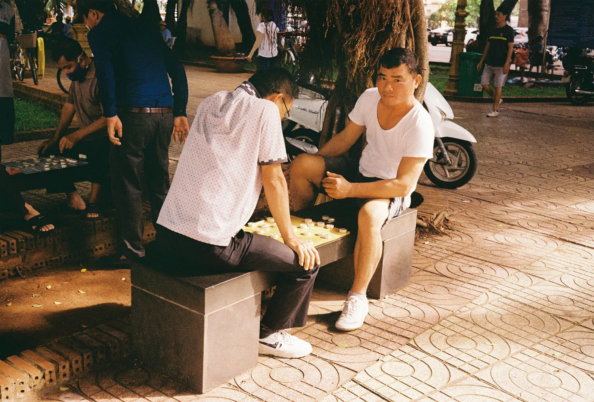
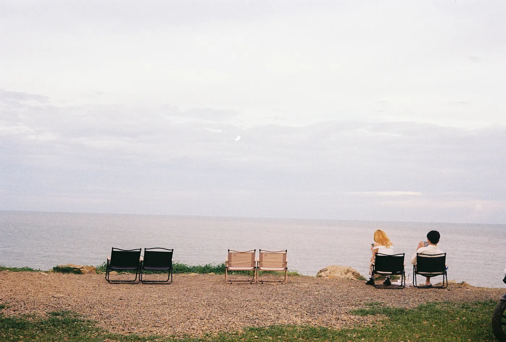
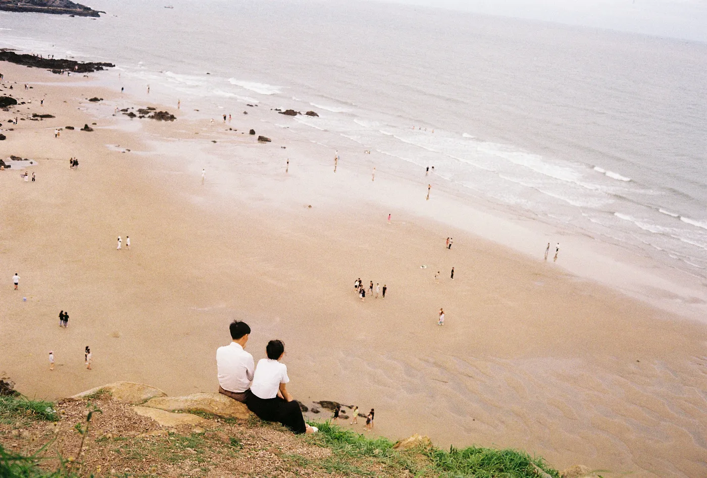
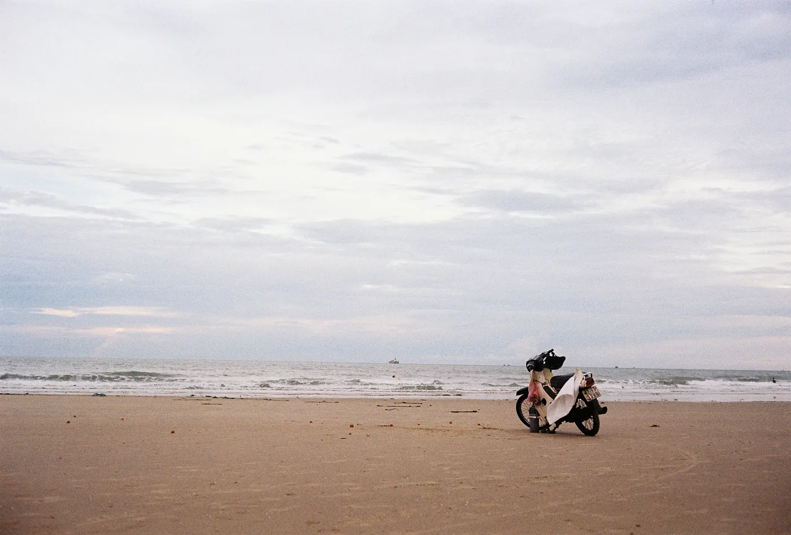

Finding Peace
By Huy Quang Vũ |Work and rest go hand in hand, and I firmly believe that maintaining a balance between the two is essential. Opting to visit Vung Tau City turned out to be a wise decision, providing me with the much-needed respite from my work. Vung Tau isn't a flashy city with towering skyscrapers or a wide array of renowned traditional dishes. Instead, its claim to fame lies in its tranquil and unhurried ambiance, which draws people in. It's a place where the sea, the mountains, and the people collectively create an environment that encourages you to savor each and every moment.
I didn't focus on capturing food photos during my visit because Vung Tau isn't particularly celebrated for its cuisine, as you mentioned. Instead, I turned my lens toward the people and the picturesque scenery, preserving the essence of this city through my photography.
People
Upon my arrival at my aunt's house, an amusing incident unfolded. My nephew, in an enthusiastic manner, rushed toward me and embraced me tightly. It wasn't until later that we realized she had mistaken me for my aunt's son, who happens to bear a striking resemblance to me. This mix-up resulted in the heartfelt hug, which led to a bout of laughter shared among us. Despite the initial confusion, my affection for my nephew remained as strong as ever, and we all had a good laugh about the incident.
In addition to the mix-up, my niece and I shared a close bond. She developed a fascination for my analog camera, the Canon Canonet G-III QL17. She was genuinely curious about why she couldn't view the photos immediately after they were taken. I tried my best to explain the unique nature of a film camera, but it proved challenging for her to grasp. It was a clear instance where the generation gap became evident in our real-life interactions.
Nonetheless, I seized the opportunity to capture some beautiful moments with her using a Fuji C200 film roll, which produced stunning and vibrant colors. I must say the film roll didn't disappoint me at all. In the frames, my niece appeared radiant, playful, and absolutely lovely. These photos became precious keepsakes of our time together.
As I ventured outside, I came across a park where people were either exercising or engaged in games of Chinese chess. Intrigued by the scene, I paused, reached for my camera, and began taking photographs. This outing marked the first time I used my new camera, and as a result, only one of the photos I took turned out well.
In this particular shot, two men were locked in a tense match of Chinese chess. At one point, one of the men noticed my presence and gestured for me to move away, signaling for me to leave. Fortunately, I managed to capture the moment at precisely the right instant, ensuring that no trace of his irritated gesture was visible in the photo. It became a compelling image, freezing that intense moment in time without any hint of annoyance or frustration.
Sightseeing
Upon my arrival in Vung Tau, my aunt kindly introduced me to a local young man who would serve as my "tour guide" during my first day there. He happened to be two years younger than me, and from the outset, it was clear that he was a kind and humble individual. After my photo excursion in the park, I returned home and eagerly awaited the arrival of my local guide.
When he arrived at my aunt's house, we exchanged introductions. Since it was late in the afternoon, he drove me to a nearby coast where I had hoped to capture some stunning sunset photos. Regrettably, there was no sunset to be seen that evening. Nevertheless, the scenery was so breathtaking that I was able to capture some beautiful moments despite the absence of the sun's descent below the horizon.
This shot is a perfect example of the beautiful moments I captured during that time. As I adjusted my camera downward, I noticed a lovely couple seated near the wave-cut cliff, engrossed in a conversation with each other. Naturally, I couldn't resist capturing the scene. It was a remarkable blend of intimacy within the vast expanse of the surroundings – a truly special moment to witness and preserve.
As we made our way down to the berm, we encountered a scooter parked by the shore, its owner having left it behind while they went fishing. The sight of the solitary scooter, set against the backdrop of the cloudy sky and captured on the Fuji C200 film roll, truly conveyed a sense of loneliness in the photo. It's a poignant image that encapsulates the deserted atmosphere of the moment.
The following morning, I borrowed my aunt's motorcycle and made my way back to the coast that my "tour guide" and I had previously visited in hopes of capturing the sunrise. This time, luck was on my side as the sky was clear, devoid of clouds. As the sun began its ascent, its light grew stronger and stronger. Despite the harsh lighting conditions, I couldn't resist continuously taking photographs of the breathtaking sunrise unfolding before me.
Street photography indeed has its own charm because it doesn't require a model to create a compelling photo. You simply observe your surroundings, and when you come across a moment where a person fits perfectly into your frame, you click the shutter. It's a valuable lesson that I've internalized and taken to heart in my photography journey. It teaches you to find beauty and meaning in the everyday scenes and people around you.
Final words
It's uncertain when I'll have the opportunity to visit Vung Tau once more, but I'm certain that it holds a special place in my memory. The city provided me with a wonderful retreat, thanks to its unique atmosphere. So, I say to Vung Tau, "One day, I'll return!"